| 陆军科技 | 海军科技 | 空军科技 | 电子与工业 |
|---|---|---|---|
无
|
|
「无」 没有
|
「无」 |
| 陆军学说 | 海军学说 | 空军学说 |
|---|---|---|
|
「无」 |
「无」 |
「无」 |
原页面：Brazil
The  巴西第二共和国 is a regional power in South America with a population of 44.02 M. It borders almost all countries on its continent:
巴西第二共和国 is a regional power in South America with a population of 44.02 M. It borders almost all countries on its continent:  乌拉圭,
乌拉圭,  阿根廷, and
阿根廷, and  巴拉圭 to the southwest,
巴拉圭 to the southwest,  玻利维亚和
玻利维亚和 秘鲁 to the west,
秘鲁 to the west,  哥伦比亚和
哥伦比亚和 委内瑞拉 to the northeast, and the European colonies of
委内瑞拉 to the northeast, and the European colonies of  英国 Guiana,
英国 Guiana,  荷兰 Guiana, and
荷兰 Guiana, and  法国 Guiana to the north. Although it starts out relatively weak, as the largest and arguably strongest nation in South America, it's in a prime position to expand into its many weaker neighbors and dominate the continent. Brazil's terrain is dominated by the jungles and forests of the Amazon.
法国 Guiana to the north. Although it starts out relatively weak, as the largest and arguably strongest nation in South America, it's in a prime position to expand into its many weaker neighbors and dominate the continent. Brazil's terrain is dominated by the jungles and forests of the Amazon.
With the Old Republic of Brazil overthrown in the 1930 revolution, a political alliance known as the Liberal Alliance (Aliança Liberal) took power. This was mainly because of Brazil's reliance on foreign markets and loans, and with the price of coffee plummeting, the country headed into a deep recession. With the Brazilian economy steadily growing worse, it soon led to the rise of Getúlio Vargas, a populist governor of Rio Grande do Sul, whose ascendance relied heavily on a very diverse group of supporters.
After attaining power, Vargas quickly faced the problems any such diverse coalition would, with "modernization" being only a vague term keeping the different groups together. During the years 1930 to 1934, Vargas initiated a series of reforms that can best be described as an attempt to reconcile the radically diverging interests of his supporters, in a process collectively comparable to those of Benito Mussolini's fascist  意大利. He also promoted a sense of self-reliance nationalism with heavy tariffs to "perfect our manufacturers to the point where it will become unpatriotic to feed or clothe ourselves with imported goods!".
意大利. He also promoted a sense of self-reliance nationalism with heavy tariffs to "perfect our manufacturers to the point where it will become unpatriotic to feed or clothe ourselves with imported goods!".
Only in 1934, after 4 years in power and having fought a civil war against constitutionalists in 1932, Vargas accepted to have his government be limited by a constitution. In 1935, following orders of the Comintern, the left promoted an uprising across the country with the aim of overthrowing Vargas and installating a Communist dictatorship headed by Luís Carlos Prestes. Receiving support from the Integralists, the government crushed the Communist uprising and procceded to supress the left.
Having alienated the left, threatened by increasing disagreement and tensions between his supporters and facing the exponential growth of their party, Vargas eventually got pushed into an informal alliance with the Integralists, the major Nationalist movement of Brazil. The years 1934 to 37 were characterized mainly by assimilating minor groups with interests akin to those of his own government and suppressing leftist opposition, while watching the rise of the Integralists, whose party grew by more than 1 million members during those years.
With Vargas' term due to end in 1938, the government fabricated an alleged communist plot in 1937, which Vargas used to create a favorable atmosphere to stay in power. In his address on 10 November 1937, Vargas, invoking the supposed Communist threat, decreed a state of emergency and dissolved the Legislature. He also announced the adoption by Presidential fiat of a new, severely authoritarian Constitution that effectively placed all governing power in his hands. This ended the 1934 constitution, and Vargas proclaimed the Estado Novo (New State).
Under the Estado Novo, Vargas abolished all political parties, imposed censorship, established a centralized police force, and filled prisons with political dissidents, while evoking a sense of nationalism that transcended class and bound the masses to the state. Facing increasing suppression and persecution, the opposition (led by the integralists) attempted a failed counter-coup to restore the 1934 constitution and the 1938 elections, which resulted in even more repression.
Brazil's involvement in WWII started out as initially friendly towards the Axis powers, and at first it seemed Vargas' regime was entering into the Axis orbit, even before the proclamation of the Estado Novo. With increasing trade, both civilian and military, between the Axis powers and Brazil, and with  德国 being the second largest export market for Brazilian cacao and coffee, largest for cotton, and the German bank establishing three hundred branches in Brazil, US officials soon started to worry where Vargas' international alignment was heading. With Brazil deporting Luís Carlos Prestes' wife, the revolutionary Jewish German Olga Benário Prestes in 1937,
德国 being the second largest export market for Brazilian cacao and coffee, largest for cotton, and the German bank establishing three hundred branches in Brazil, US officials soon started to worry where Vargas' international alignment was heading. With Brazil deporting Luís Carlos Prestes' wife, the revolutionary Jewish German Olga Benário Prestes in 1937,  德国 offered a formal invitation to the Axis powers at the side of
德国 offered a formal invitation to the Axis powers at the side of  日本和
日本和 意大利. The relations, however, soon started to chill when Vargas refused the invitation around the same time as he ousted the integralists, with the proclamation of the Estado Novo.
意大利. The relations, however, soon started to chill when Vargas refused the invitation around the same time as he ousted the integralists, with the proclamation of the Estado Novo.
In early 1940, the  美国 started reaching out to Brazil with its "Good Neighbor Policy". The pragmatic Vargas eventually sided with the Allies, mainly for economic reasons, with the Allies being more valuable trading partners than the Axis and also in exchange for financing of the Companhia Siderúrgica Nacional (National Siderurgical Company, the national steelworks). Eventually, the German and Italian sinking of Brazilian trade ships through their unrestricted submarine warfare led to Brazil formally joining the Allies in August 1942, with a formal declaration of war against
美国 started reaching out to Brazil with its "Good Neighbor Policy". The pragmatic Vargas eventually sided with the Allies, mainly for economic reasons, with the Allies being more valuable trading partners than the Axis and also in exchange for financing of the Companhia Siderúrgica Nacional (National Siderurgical Company, the national steelworks). Eventually, the German and Italian sinking of Brazilian trade ships through their unrestricted submarine warfare led to Brazil formally joining the Allies in August 1942, with a formal declaration of war against  德国和
德国和 意大利. Brazil eventually sent an expeditionary force in the latter half of 1944, and provided the Allies with a steady supply of rubber through the war.
意大利. Brazil eventually sent an expeditionary force in the latter half of 1944, and provided the Allies with a steady supply of rubber through the war.
The siding with the Allies did not go unnoticed at home, and the paradoxicality of an authoritarian dictatorship fighting with the liberal forces largely increased the anti-dictatorship sentiment in Brazil. To counter this, Vargas led through a series of reforms, promising "a new postwar era of liberty" that included amnesty for political prisoners, presidential elections, and the legalization of opposition parties. This political liberalization contributed to the downfall of the Estado Novo, being substantial enough to provoke Vargas' resignation on 29 October 1945 and the return to democracy with the 1945 presidential election. This eventually led to the establishment of the Fourth Brazilian Republic in 1946, an unstable republic with high pressure from the military on civilian politicians, which ended with the 1964 Brazilian Coup and establishment of Brazilian military government.
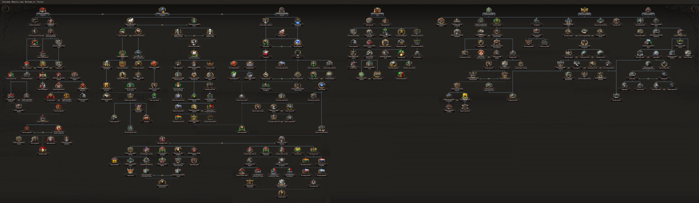
 巴西 gets a unique national focus tree as part of the
巴西 gets a unique national focus tree as part of the  效忠审判 expansion. Without the expansion, Brazil utilizes the 通用国策树.
效忠审判 expansion. Without the expansion, Brazil utilizes the 通用国策树.
The Brazilian national focus tree can be divided into 4 branches, 6 sub-branches and 1 shared branch section:
 巴西 开局拥有以下国家精神：
巴西 开局拥有以下国家精神：
With the  效忠审判 DLC enabled, Brazil also starts with the following national spirits:
效忠审判 DLC enabled, Brazil also starts with the following national spirits:
 巴西 begins with 2 research slots available; 2 more can be unlocked through the national focus tree.
巴西 begins with 2 research slots available; 2 more can be unlocked through the national focus tree.
| 陆军科技 | 海军科技 | 空军科技 | 电子与工业 |
|---|---|---|---|
无
|
|
「无」 没有
|
「无」 |
| 陆军学说 | 海军学说 | 空军学说 |
|---|---|---|
|
「无」 |
「无」 |
「无」 |
| 陆军科技 | 海军科技 | 空军科技 | 电子与工业 |
|---|---|---|---|
无
|
|
「无」 没有
|
|
| 陆军学说 | 海军学说 | 空军学说 |
|---|---|---|
|
|
|
 巴西 has a number of unique names and appearances for various technologies and equipment, listed here. Particularly US armaments, except their own 步兵装备. Note that generic names are not listed.
巴西 has a number of unique names and appearances for various technologies and equipment, listed here. Particularly US armaments, except their own 步兵装备. Note that generic names are not listed.
| 类型 | 1918 | 1936 | 1938 | 1939 | 1940 | 1942 | 1943 | 1944 |
|---|---|---|---|---|---|---|---|---|
| 支援武器 | BAR & Stokes mortar | M1917 Browning MG & M2 60 mm mortar | M1919 Browning MG & M1 mortar | M1941 Johnson MG & M2 4.2 inch mortar | ||||
| 步兵装备 | M1908 | M1 Garand | M1 Thompson | M2 Carbine | ||||
| 步兵反坦克 | M1 Bazooka | M20 recoilless rifle | ||||||
| 机械化 | M2 Half Track Car | M3 Half-Track | M5 Half-Track | |||||
| 装甲车 |
M1 | M3 | M8 |
 巴西 owns 31 states.
巴西 owns 31 states.
| 州 | 城市 | 地形（省份数） | 区域 | ||
|---|---|---|---|---|---|
| 阿克里 | Rio Branco | 2 | 牧区 | 463,559 | |
| 阿马帕 | Macapá | 2 | 牧区 | 350,000 | |
| Amazon | – | – | 荒地 | 7,683 | |
| Amazon | – | – | 荒地 | 12,300 | |
| Amazon | – | – | 荒地 | 10,342 | |
| Amazon | – | – | 荒地 | 8,962 | |
| Amazon | – | – | 荒地 | 21,987 | |
| Amazon | – | – | 荒地 | 13,541 | |
| Amazon | – | – | 荒地 | 10,348 | |
| Amazon | – | – | 荒地 | 6,753 | |
| 亚马逊 | Manaus | 1 | 牧区 | 159,900 | |
| 巴伊亚 | Salvador | 1 | 稀疏城市区 | 4,233,900 | |
| 塞阿拉 | Fortaleza | 2 | 发达乡村区 | 1,632,000 | |
| 圣埃斯皮里图 | Vitória | 5 | 发达乡村区 | 4,603,600 | |
| 戈亚斯 | Goiânia | 3 | 乡村区 | 1,662,200 | |
| 瓜波雷 | Porto Velho | 2 | 牧区 | 120,000 | |
| 马拉尼昂 | São Luís | 2 | 牧区 | 575,050 | |
| 马托格罗索 | Cuiabá | 2 | 牧区 | 120,000 | |
| 米纳斯吉拉斯 | Belo Horizonte | 3 | 乡村区 | 4,603,600 | |
| 帕拉 | Belém | 3 | 牧区 | 975,050 | |
| 巴拉那 | Curitiba | 2 | 乡村区 | 961,350 | |
| 伯南布哥 | Recife | 5 | 发达乡村区 | 2,282,000 | |
| 皮奥伊 | Teresina | 1 | 乡村区 | 1,800,000 | |
| 蓬塔波拉 | Campo Grande | 2 | 乡村区 | 229,900 | |
| Rio Branco | Boa Vista | 1 | 牧区 | 10,000 | |
| 里约热内卢 | 里约热内卢 | 10 | 密集城市区 | 6,665,500 | |
| 北里奥格兰德 | Natal | 3 | 发达乡村区 | 649,000 | |
| 南里奥格兰德 | Porto Alegre | 3 | 发达乡村区 | 2,959,600 | |
| 圣卡塔琳娜 | Florianópolis Joinville |
2 1 |
乡村区 | 961,350 | |
| 圣保罗 | Santos 圣保罗 |
1 20 |
城市区 | 6,199,200 | |
| 托坎廷斯 | Palmas | 1 | 乡村区 | 1,662,200 |
Brazil starts in 1936 as a democratic country, conservative specifically with election held every 4 years, next election is in July 1938.
| 政党 | 意识形态 | 支持率 | 党派领袖 | 国名 | 是否执政？ |
|---|---|---|---|---|---|
| 军事 | 25% | 阿林多·韦加·多斯桑托斯 | 巴西 | No | |
| 巴西整体主义行动（AIB） | 14% | 普利尼奥·萨尔加多 | 整体主义巴西 | No | |
| 巴西共产党（PCB） | 10% | 路易斯·卡洛斯·普雷斯特斯 |
巴西社会主义共和国 | No | |
| Provisional Government (UDN) | 49% | 热图利奥·瓦加斯 | 巴西第二共和国 | 是 |
巴西 的可能国家领袖。
的可能国家领袖。
| 意识形态 | 肖像 | 名称 | 党派 | 特质 | 效果 | 可用 |
|---|---|---|---|---|---|---|
Despotism |
|
热图利奥·瓦加斯 | 军事 | 威权民粹主义者 | can come to power via focus 新国家 | |
Despotism |
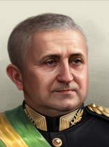 |
欧里科·加斯帕尔·杜特拉 | 军事 | 军工实业家 | can come to power via focus | |
Despotism |
阿林多·韦加·多斯桑托斯 | 军方 / 巴西帝国爱国行动（AIPB） | 坚定的君主主义者 |
|
can come to power via the | |
Despotism |
Pedro de Alcântara | 巴西帝国爱国行动（AIPB） | 白鸽 |
|
can come to power via focus 动用《国家安全法》 if the focus 支持佩德罗·德·阿尔坎塔拉的王位主张 has been chosen before or via the | |
Despotism |
佩德罗·恩里克 | 巴西帝国爱国行动（AIPB） | 受过政治教育 |
|
can come to power via focus 动用《国家安全法》 if the focus 支持佩德罗·德·阿尔坎塔拉的王位主张 has been chosen before | |
民粹主义 |
|
热图利奥·瓦加斯 | Provisional Government (UDN) | 威权民粹主义者 | 起始领袖 | |
保守主义 |
阿曼多·德·萨莱斯·奥利维拉 | 巴西民主联盟（UDB） | 民主改革者 |
|
can come to power via focus 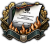 废除《国家安全法》 or via event Election Season | |
保守主义 |
欧里科·加斯帕尔·杜特拉 | 巴西民主联盟（UDB） | 军工实业家 | 可通过事件Election Season上台 | ||
自由主义 |
Anísio Teixeira | 巴西民主联盟（UDB） | 教育先驱 |
|
可通过事件Election Season上台 | |
社会主义 |
米内尔维诺·德奥利维拉 | 巴西民主联盟（UDB） | 工会成员 | 可通过事件Election Season上台 | ||
自由主义 |
林多尔福·科洛尔 | 巴西民主联盟（UDB） | Anti-Authoritarian |
|
可通过事件Election Season上台 | |
保守主义 |
阿林多·韦加·多斯桑托斯 | Provisional Government (UDN) | 坚定的君主主义者 |
|
can come to power via focus Café Com Leite Politics | |
斯大林主义 |

|
多明戈斯·布拉斯 | 巴西共产党（PCB） | can come to power via focus | ||
斯大林主义 |
路易斯·卡洛斯·普雷斯特斯 | 巴西共产党（PCB） | 与斯大林结盟 |
|
can come to power via focus | |
马克思主义 |

|
全国解放联盟委员会 | 巴西共产党（PCB） | 全国解放联盟委员会 | can come to power via focus | |
Anarcho-Communism |
兰皮昂 | 坎加索 | 土匪革命者 |
|
can come to power via focus | |
法西斯主义 |
普利尼奥·萨尔加多 | 巴西整体主义行动（AIB） | Dictator |
|
can come to power via focus 为了祖国 | |
法西斯主义 |
|
热图利奥·瓦加斯 | 巴西整体主义行动（AIB） / 巴西反君主主义联盟（CAB） | can come to power via focus 现代国家 or via the |
巴西 的部长与军事幕僚。
的部长与军事幕僚。
| 名称 | 特质 | 效果 | 花费（） |
|---|---|---|---|
| 欧里科·加斯帕尔·杜特拉 |
Minister of Defense | 150 | |
| Washington Luis Pereira |
幕后暗算者 |
|
150 |
| Washington Luis Pereira |
Deposed Former President | 150 | |
| Osvaldo Aranha |
仁慈绅士 |
|
150 |
| Osvaldo Aranha |
Renowned Ambassador | 150 | |
| Afranio de Mello Franco |
受拥戴的傀儡领袖 |
|
150 |
| Afranio de Mello Franco |
Nobel Peace Prize Nominee |
|
150 |
| José Linhares |
Supreme Court Justice | 100 | |
| Benedito Valadares |
Political Fox |
|
100 |
| Alfred Agache |
Modernist Architect |
|
100 |
| João Neves da Fontoura |
Distinguished Diplomat | 100 | |
| João Marques dos Reis |
Minister of Transport | 150 | |
| Francisco Campos |
Right-Wing Ideologue | 150 | |
| Filinto Müller |
Head of the Political Police |
|
150 |
| 林多尔福·科洛尔 |
Anti-Authoritarian |
|
150 |
| José Américo de Almeida |
Academic Writer | 150 | |
| Anísio Teixeira |
教育先驱 |
|
150 |
| Armando de Sales Oliveira |
Democratic Engineer | 150 | |
| 米内尔维诺·德奥利维拉 |
工会成员 | 150 | |
| Olga Benário Prestes |
Soviet Spy |
|
150 |
| Apolônio de Carvalho |
Militant Communist | 150 | |
| 随机 |
军工实业家 | 150 | |
| 随机 |
工业巨头 | 150 | |
| 多明戈斯·布拉斯 |
虔诚的共产党人 |
|
150 |
| Leoncio Basbaum |
Communist Intellectual | 150 | |
| Gustavo Barroso |
法西斯军国主义者 | 150 | |
| Miguel Reale |
法西斯宣传家 |
|
150 |
| Oliveira Viana |
Controversial Academic |
|
150 |
| Geremia Lunardelli |
Coffee King | 100 | |
| Henry Ford |
Vengeful Industrialist | 150 |
| 肖像 | 名称 | 特质 | 效果 | 要求 | ( |
|---|---|---|---|---|---|

|
牛顿·卡瓦尔坎蒂 | 军事理论家 |
|
– | 100 |
| 爱德华多·戈麦斯 | 空战理论家 |
|
– | 100 |
| 肖像 | 名称 | 特质 | 效果 | 要求 | ( |
|---|---|---|---|---|---|

|
随机 | 陆军防御（专家） |
|
– | 100 |
|
|
Nero Fiuza de Castro | 陆军操练（专家） |
|
– | 100 |
| 肖像 | 名称 | 特质 | 效果 | 要求 | ( |
|---|---|---|---|---|---|

|
Jorge Martins | 破交作战（专家） |
|
– | 100 |
| Floriano Peixoto | 决战（专家） |
|
– | 100 | |
| Henrique Aristides Guilhem | 海军航空（专家） |
|
100 |
| 肖像 | 名称 | 特质 | 效果 | 要求 | ( |
|---|---|---|---|---|---|
| Salgado Filho | 地面支援（专家） |
|
– | 100 | |
| Ismael Motta Paes | 夜间作战（专家） |
|
– | 100 |
| 肖像 | 名称 | 特质 | 效果 | 要求 | ( |
|---|---|---|---|---|---|
| Epaminondas dos Santos | 空战训练（专家） |
|
– | 100 | |
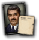 |
Agliberto Vieira | 海军防空（专家） |
|
– | 100 |

|
Artur da Costa è Silva | 步兵（专家） |
|
– | 100 |
| Moreira Lima | 制空（专家） |
|
– | 100 |
| 肖像 | 名称 | 特质 | 要求 | |||||
|---|---|---|---|---|---|---|---|---|
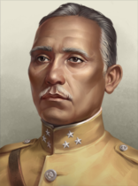 |
Cândido Rondon | 3 | 4 | 3 | 2 | 2 | ||
| Floriano de Lima Brayner | 1 | 1 | 1 | 1 | 1 | |||
| Olympio Falconiére da Cunha | 2 | 4 | 1 | 2 | 1 |
| 肖像 | 名称 | 特质 | 要求 | |||||
|---|---|---|---|---|---|---|---|---|
| Augusto Tasso Fragoso | 1 | 1 | 1 | 1 | 1 | |||
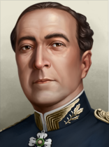 |
Cristóvão de Castro Barcelos | 2 | 1 | 2 | 1 | 3 | ||
| Eduardo Guedes | 1 | 1 | 1 | 1 | 1 | |||
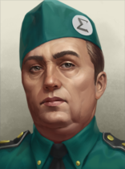 |
Emilío Fragoso | 1 | 2 | 2 | 1 | 1 |
| |
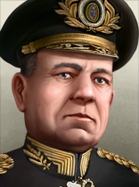 |
Euclides Zenobio Da Costa | 2 | 2 | 2 | 2 | 1 | ||
| 欧里科·加斯帕尔·杜特拉 | 3 | 2 | 3 | 2 | 3 | – | ||
| Góis Monteiro | 2 | 1 | 1 | 3 | 2 | |||
| Henrique Teixeira Lott | 1 | 1 | 1 | 1 | 1 | |||
| José Pessoa | 1 | 1 | 1 | 1 | 1 | |||
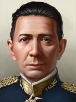 |
João Pereira de Oliveria | 1 | 1 | 1 | 1 | 1 | ||
| 兰皮昂 | 3 | 3 | 3 | 2 | 2 |
| ||
| Mascarenhas de Morais | 4 | 2 | 4 | 3 | 4 | – | ||
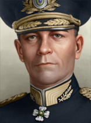 |
Milton de Freitas | 1 | 1 | 1 | 1 | 1 | ||
| Olga Benário Prestes | 2 | 2 | 1 | 2 | 2 |
| ||
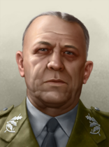 |
Álvaro Fiúza de Castro | 1 | 1 | 1 | 1 | 1 |
| 肖像 | 名称 | MNV |
COR |
特质 | 要求 | |||
|---|---|---|---|---|---|---|---|---|
| Augusto Rademaker | 3 | 2 | 2 | 1 | 2 | – | ||
| Henrique Aristides Guilhem | 1 | 1 | 2 | 1 | 1 | |||
| Protógenes Pereira Guimarães | 1 | 2 | 1 | 1 | 1 | |||
| Renato de Almeida Guillobel | 2 | 1 | 1 | 2 | 2 | |||
| Silvo de Noronha | 2 | 2 | 2 | 1 | 1 | |||
| Álvaro Alberto da Motta e Silva | 2 | 2 | 2 | 1 | 1 |
Without  效忠审判,
效忠审判,  巴西 uses generic concerns, designers and organizations.
巴西 uses generic concerns, designers and organizations.
| 标志 | 名称 | 类型 | 效果 | 要求 | 花费（） |
DLC |
|---|---|---|---|---|---|---|

|
Banco do Brasil | 中央银行 |
|
|
75 | |

|
Rádio Marconi | 电子学财团 |
|
|
150 | |

|
EF Central do Brasil | 铁路公司 |
|
|
150 | |

|
Lloyd Brasileiro | Shipping Concern |
|
150 | ||

|
Departamento Nacional do Café | 工业财团 |
|
|
50 |
巴西 的设计公司。
的设计公司。
| 标志 | 名称 | 类型 | 效果 | 要求 | 花费（） |
DLC |
|---|---|---|---|---|---|---|

|
巴西菲亚特 | 机动坦克设计商 |
选择此设计公司后，只要它仍在受雇，就会永久影响其受雇期间研究的所有装备的性能。 |
|
150 | |
| Bernardini | 中型坦克设计商 |
|
|
150 |
| 标志 | 名称 | 类型 | 效果 | 要求 | 花费（） |
DLC |
|---|---|---|---|---|---|---|
| 里约热内卢海军兵工厂 | 护航舰队设计商 |
选择此设计公司后，只要它仍在受雇，就会永久影响其受雇期间研究的所有装备的性能。 |
|
150 | ||

|
Rubin | 袭击舰队设计商 |
选择此设计公司后，只要它仍在受雇，就会永久影响其受雇期间研究的所有装备的性能。 |
|
150 |
| 标志 | 名称 | 类型 | 效果 | 要求 | 花费（） |
DLC |
|---|---|---|---|---|---|---|

|
巴西航空工业公司 | 轻型飞机设计商 |
选择此设计公司后，只要它仍在受雇，就会永久影响其受雇期间研究的所有装备的性能。 |
|
150 | |

|
米格设计局 | 轻型飞机设计商 |
选择此设计公司后，只要它仍在受雇，就会永久影响其受雇期间研究的所有装备的性能。 |
|
150 | |

|
中型航空连 | 中型飞机设计商 |
选择此设计公司后，只要它仍在受雇，就会永久影响其受雇期间研究的所有装备的性能。 |
|
150 | |

|
重型航空连 | 重型飞机设计商 |
选择此设计公司后，只要它仍在受雇，就会永久影响其受雇期间研究的所有装备的性能。 |
|
150 | |

|
海军空军连 | 海军飞机设计商 |
选择此设计公司后，只要它仍在受雇，就会永久影响其受雇期间研究的所有装备的性能。 |
|
150 |
| 标志 | 名称 | 类型 | 效果 | 要求 | 花费（） |
DLC |
|---|---|---|---|---|---|---|

|
Gaz | 摩托化装备设计商 |
|
150 | ||

|
福特汽车公司 | 摩托化装备设计商 |
|
|
150 | |
| Fábrica Nacional de Motores | 摩托化装备设计商 |
|
|
150 | ||
| Amadeo Rossi | 步兵装备设计商 |
|
|
150 | ||

|
Departamento de Artilharia | 火炮设计商 |
|
|
150 |
 巴西 可使用这些军工产业组织。
巴西 可使用这些军工产业组织。
| ||||||||||||||||||||||||||||||||||||||||||||||||||||||||||||||||||||||||||||||||||||||||||||||||||||||||||||||||||||||||||||||||||||||||||||||||||||||||||||||||||||||||||||||||||||||||||||||||||||||||||||||||||||||||||||||||||||||||||||||||||||||||||||||||||||||||||||||||||||||||||||||||||||||||||||||||||||||||||||||||||||||||||||||||||||||||||||||||||||||||||||||||||||||||||||||||||||||||||||||||||||||||||||||||||||||||||||||||||||||||||||||||||||||||||||||||||||||||||||||||||||||||||
| ||||||||||||||||||||||||||||||||||||||||||||||||||||||||||||||||||||||||||||||||||||||||||||||||||||||||||||||||||||||||||||||||||||||||||||||||||||||||||||||||||||||||||||||||||||||||||||||||||||||||||||||||||||||||||||||||||||||||||||||||||||||||||||||||||||||||||||||||||||||||||||||||||||||||||||||||||||||||||||||||||||||||||||||||||||||||||||||||||||||||||||||||||||||||||||||||||||||||||||||||||||||||||||||||||||||||||||
| ||||||||||||||||||||||||||||||||||||||||||||||||||||||||||||||||||||||||||||||||||||||||||||||||||||||||||||||||||||||||||||||||||||||||||||||||||||||||||||||||||||||||||||||||||||||||||||||||||||||||||||||||||||||||||||||||||||||||||||||||||||||||||||||||||||||||||||||||||||||||||||||||||||||||||||||||||||||||||||||||||||||||||||||||||||||||||||||||||||||||||||||||||||||||||||||||||||||||||||||||||||||||||||||||||||||||||||||||||||||||||||||||||||||||||||||||||||||||||||||||||||||||||||||||||||||||||||||||||||||||||||||||||
| ||||||||||||||||||||||||||||||||||||||||||||||||||||||||||||||||||||||||||||||||||||||||||||||||||||||||||||||||||||||||||||||||||||||||||||||||||||||||||||||||||||||||||||||||||||||||||||||||||||||||||||||||||||||||||||||||||||||||||||||||||||||||||||||||||||||||||||||||||||||||||||||||||||||||||||||||||||||||||||||||||||||||||||||||||||||||||||||||||||||||||||||||||||||||||||||||||||||||||||||||||||||||||||
| 征兵法案 | 贸易法案 | 经济法令 |
|---|---|---|
|
|
|
*1936 年与 1939 年的法案相同。
Representing its industrial mobilization through Vargas' early years, Brazil has many factories, but very few dedicated to military purposes.
年份 |
军用工厂 |
海军船坞 |
民用工厂 |
建筑槽位 |
|---|---|---|---|---|
| 1936 | 3 | 2 | 17 (-6) | 61 |
*红色 中的数字表示生产消费品所需的民用工厂数量，依据经济法案以及军用与民用工厂总数向上取整。
These factories give Brazil a head start compared to a lot of other nations in the area when building up their industry further, with the closest South American nation in industrial capacity being Argentina. If one however wishes to become a major world player, expansion of one's industry must be a priority from the very beginning, as the Brazilian industrial base is by no means comparable to that of the majors.
Brazil starts with not many resources, the ones it has mostly being sent to the markets, although, it does have a respectable amount of rubber, aluminum and chromium compared to its neighbors, and most resources can be found in countries nearby if one wishes to go down a more aggressive path, with Venezuela containing an abundance of oil, Argentina and Bolivia a large supply of tungsten, and Chile controlling about half of South America's steel. Additionally, the European colonies just north of Brazil have a large abundance of Aluminum, with especially the British and Dutch being valuable. If one wishes to go on without conquering, Brazil contains the following resources within its own borders:
年份 |
石油 |
铝 |
橡胶 |
钨 |
钢铁 |
铬 |
煤 |
|---|---|---|---|---|---|---|---|
| 1936 | 0 | 18 (-9) | 21 (-10) | 2 (-1) | 6 (-3) | 4 (-2) | 15 (-7) |
*这些数字表示游戏开始一小时后可用的资源量。红色 中的数字表示因贸易法案而留作出口的资源量。
 巴西 starts in a favorable position to both expand its military, and wage small scale wars in the proximity, without having to worry too much about little manpower.
巴西 starts in a favorable position to both expand its military, and wage small scale wars in the proximity, without having to worry too much about little manpower.
| 类型 | # 1936 | # 1939 | |
|---|---|---|---|
| 步兵 | 5 | ||
| 骑兵 | 3 | 2 | |
| 师总数 | 8 | 7 | |
| 已用人力 | 55.90K | 57.50K | |
| 师 | 名称列表 | # 1936 | # 1939 | 支援连 | 战斗营 |
|---|---|---|---|---|---|
| 步兵师 | 5 | 0 | 8x | ||
| 步兵师 | 0 | 5 | 8x | ||
| 骑兵师 | 3 | 0 | 4x | ||
| 骑兵师 | 0 | 2 | 8x | ||
| * 标记的是在 1939 年开局中被移除的师。 ^ 标记仅存在于 1939 年开局中的师。 | |||||
| 类型 | Chassis | Role | 主武器 | Turret | Suspension | 装甲(等级) | 发动机（等级） | 特殊模块 |
|---|---|---|---|---|---|---|---|---|
| Panzer IV Ausf. A Requires |
基础中型 | 中型坦克 | 近距支援炮 | 三人制 | Bogie | 焊接（2） | 汽油（6） | 基础无线电、烟雾发射器 |
| 类型 | # 1936 | # 1939 | |
|---|---|---|---|
| 战列舰 | 2 | ||
| 轻巡洋舰 | 2 | ||
| 驱逐舰 | 8 | ||
| 潜艇 | 1 | 4 | |
| 运输船队 | 40 | ||
| 舰船总数 | 13 | 16 | |
| 已用人力 | 11.40K | 12.00K | |
| 类型 | Class | Hull | 发动机 | # 1936 | # 1939 | 设计说明 | ||
|---|---|---|---|---|---|---|---|---|
| BB | Minas Geraes | 早期重型舰船 | 重型 I | 2 | 2 | 2x Heavy Battery I, 3x Secondary Battery I, Fire Control 0, Battleship Armor I | ||
| CL | 巴伊亚 | 早期巡洋舰 | 巡洋舰 I | 2 | 2 | 2x Light Battery I, Anti-Air I, Fire Control 0 | ||
| DD | Para* | 早期驱逐舰 | 轻型 I | 8 | 8 | 轻型火炮 I、火控系统 0、鱼雷发射器 I | ||
| SS | Humaytá | 基础潜艇 | 潜艇 II | 1 | 1 | 鱼雷发射管 I、布雷管 | ||
| SS | Tupi^ | 基础潜艇 | 潜艇 I | 3 | 鱼雷发射管 I | |||
| * 表示某个变体已「过时」。 ^ 标记仅存在于 1939 年开局中的变体。 舰种术语：
| ||||||||
| 类型 | |||||
|---|---|---|---|---|---|
| 战斗机 | 24 | 30 | 24 | 30 | |
| 飞机总数 | 24 | 30 | 24 | 30 | |
| 已用人力 | 480 | 600 | 480 | 600 |
Brazil finds itself in a unique geographical location and can potentially change the course of the upcoming war should it choose to align itself with the Axis or Comintern.
At the start of the game, the player should focus on expanding Brazil's industry. Having a large industry is vital for any nation and Brazil is no exception. Military factories should come first as Brazil has far fewer of them compared to its much more robust civilian sector. While industrialization is underway, the Brazilian military should also be expanded. This, however, may not be an easy task as Brazil has very little resources on its territory which hampers military buildup. Brazil happens to possess 14 units of rubber which can make small-scale vehicle production possible while importing oil can allow Brazil to potentially field and maintain a motorized army, something that can easily be a decisive factor against countries lacking motorized equipment.
Once the player builds up enough political power to elect a government adviser, Brazil stands at a crossroads; Defensive or Aggressive focus? Should the player choose to be aggressive, then the next choice will be what ideology to pursue;  法西斯主义 or
法西斯主义 or  共产主义? The choice is up to the player but the +7% manpower obtainable from Fascism is a thing worth taking into consideration.
共产主义? The choice is up to the player but the +7% manpower obtainable from Fascism is a thing worth taking into consideration.
Should the player choose fascism, they will gain 7% additional manpower and Brazil can ally itself with the Axis and open up a new front in South America, bringing the war closer to the United States and depriving it of the advantage of being protected by the Atlantic and Pacific Oceans.
Should the player go for communism, Brazil could join the Comintern and, again, bring the worker's revolution into the Americas and deprive the USA of its geographical advantage.
Early conquests are a race against time, as the United States guarantees the independence of all American countries. The USA however, will not act on its guarantee unless the aggressor is from outside the Americas. Guarantees may be lost, allowing intervention: see reference for details. No matter how well entrenched the Brazilians are, holding off a full-power American military is a very hard task to do, the player's best bet is to hold off the US military long enough to drain their manpower reserve completely which is beyond tedious and grinding. As such, Brazil will have to secure enough resources and land to hold its own against the Americans before the United States gains the ability to act on its guarantees.
A communist Brazil can invade and conquer neighboring South American countries to obtain resources with Venezuela containing an abundance of oil, Argentina and Bolivia a large supply of tungsten, and Chile controlling about half of South America's steel. Additionally, the European colonies just north of Brazil have a large abundance of Aluminium, with especially the British and French being valuable. Successfully conquering all of South America could yield Brazil enough resources and factories to make it a major power on par with the others and there is technically nothing stopping Brazil from continuing its advance into Central and North America, conquering the United States is a worthwhile achievement as the number of factories and resources the player can obtain this way cannot be understated. Securing Liberia early in the game will also be useful, since it is a good spot to launch naval invasions into Europe
Should the player successfully defeat every other nation in the Americas and conquer the whole continent, Brazil will likely at this point have become powerful enough to take its fate into its own hands and freely decide what to do next. Ambitious to say the least, Brazil could quite possibly betray its allies and launch a world conquest from here, although that may be dependent on what the rest of the world looks like by this point. However, beware of Venezuela and Peru and it is advised to coup them to your targeted ideology or become fascist. This is done so there is no risk of them joining a fascist faction. The same should be done to democratic nations like Chile and Colombia, so they don't join the allies.

飞机上的蛇 作为巴西，用伞兵夺取罗马。 |

蛇也冒烟了 作为加入同盟国的巴西，在控制柏林的情况下使德国投降。 |

坏结局——全世界都成了巴西 控制世界上的每一个州 |

快乐伙伴（The Merry Band） 作为由兰皮昂统治的共产主义巴西，占领诺丁汉 |

我回来了！（I'm Home!） 作为巴西占领葡萄牙的每一块核心领土 |

第二次西斯拉普拉塔战争：电力布加洛版 作为巴西或阿根廷，在与巴西/阿根廷交战期间与乌拉圭同处一个阵营 |

主动防御 作为任一共产主义南美或中美洲国家，占领华盛顿特区。 |

丛林激斗 作为任一南美国家，拥有亚马逊地区的全部州。 |

URSAL 成为共产主义国家并拥有整个南美洲 |
| 北美洲 |
| 南美洲 |
| 大洋洲 |
| Americas |
|
| 大洋洲 |
|
 Vauxhall
Vauxhall
 Renault
Renault
 Daimler-Benz
Daimler-Benz
 Landsverk
Landsverk
 Marmon-Herrington
Marmon-Herrington
 卡梅尔·莱尔德
卡梅尔·莱尔德 Götaverken
Götaverken
 纽波特纽斯造船
纽波特纽斯造船 Avro
Avro
 Bloch
Bloch
 菲亚特航空
菲亚特航空 SAAB
SAAB
 北美航空
北美航空 Companhia Brasileira de Cartuchos
Companhia Brasileira de Cartuchos
 Departamento de Artilharia
Departamento de Artilharia
 Scania-Vabis
Scania-Vabis